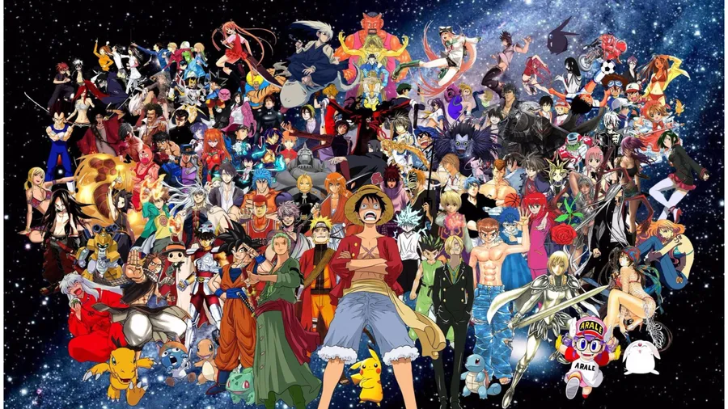

Animes, Séries e Filmes em Alta

Animes mais assistidos em 2026
TOP 3
- Jujutsu Kaisen;
- Frieren e Jornada para o além;
- Bleach;
Em 2026 esses tem sido os animes que as pessoas mais tem acompanhado e assistidos.
Séries mais assistidas em 2026
TOP 3
- Demolidor Renascido;
- The boys;
- Invencivel;
Essas são as séries mais assistidas em 2026 no qual a maioria é da Amazon Prime.
Filmes mais assistidos em 2026
TOP 3
- Homem Aranha um novo Dia;
- Vingadores Doutor Destino;
- Supergirl.
Esses são os filmes mais esperados no ano de 2026 - a maioria da Marvel.